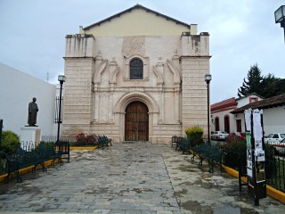
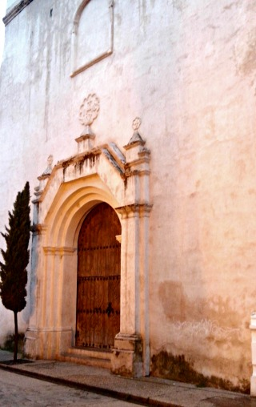
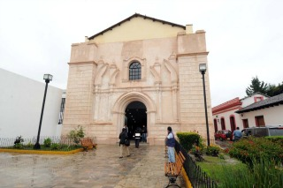
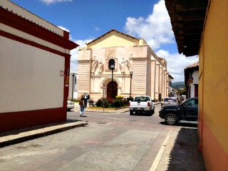
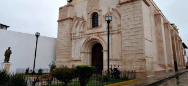

El templo de San Agustín es un edificio de estilo barroco del siglo XVIII.
Actualmente funciona como auditorio de la facultad de derecho de la universidad autónoma de Chiapas que se encuentra anexo al mismo.
Se encuentra ubicadoen la Avenida Crescencio Rosas y esquina calle Niños Heroes.
Partiendo de la plaza de la paz viendo de frente hacia la catedral puede caminar hacia su derecha pasando entre la plaza 31 de Marzo y el ayuntamiento San Cristóbal de las casas
Como referencia encontrará el Banco Santander y Frente a este la Farmacia Similar caminara por el andador ecleciástico que se encuentra entre estos dos lugares, hasta llegar a la esquina de TELMEX dobla a su derecha sobre la calle Niños Heroes.
Camina una cuadra y a su derecha podrá encontrar el Auditorio de la Facultad de Derecho.
Las actividades que puede realizar son:
Fotografía, Visitar lugares historicos, Usar como centro de convenciones, Asistir a congresos y seminarios, Eventos culturales, Festivales de música, Festivales folklóricos, ópera y ballet






posicione el mouse sobre las imágenes